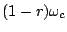
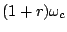
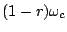
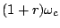
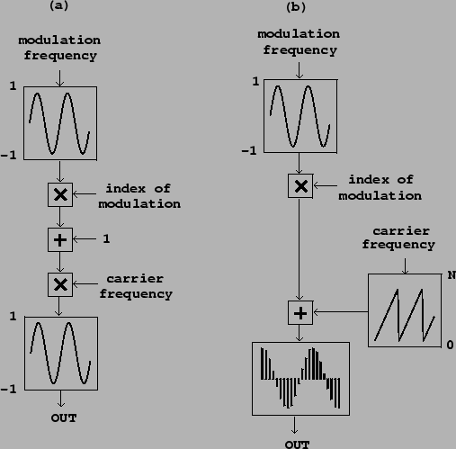

If a sinusoid is given a frequency which varies slowly in time we hear it as having a varying pitch. But if the pitch changes so quickly that our ears can't track the change--for instance, if the change itself occurs at or above the fundamental frequency of the sinusoid--we hear a timbral change. The timbres so generated are rich and widely varying. The discovery by John Chowning of this possibility [Cho73] revolutionized the field of computer music. Here we develop frequency modulation, usually called FM, as a special case of waveshaping [Leb79] [DJ85, pp.155-158]; the analysis given here is somewhat different [Puc01].
The FM technique, in its simplest form, is shown in Figure 5.8
(part a).
A frequency-modulated sinusoid is one whose frequency varies sinusoidally, at
some angular frequency  , about a central frequency
, about a central frequency  , so
that the instantaneous frequencies vary between  and
, with parameters
, so
that the instantaneous frequencies vary between  and
, with parameters  controlling the frequency of
variation, and
controlling the frequency of
variation, and  controlling the depth of variation. The parameters
controlling the depth of variation. The parameters
 ,
,  , and
, and  are called the
carrier frequency, the
modulation frequency, and the
index of modulation, respectively.
are called the
carrier frequency, the
modulation frequency, and the
index of modulation, respectively.
It is customary to use a simpler, essentially equivalent formulation in which the phase, instead of the frequency, of the carrier sinusoid is modulated sinusoidally. (This gives an equivalent result since the instantaneous frequency is the rate of change of phase, and since the rate of change of a sinusoid is just another sinusoid.) The phase modulation formulation is shown in part (b) of the figure.
We can analyze the result of phase modulation as follows, assuming that
the modulating oscillator and the wavetable are both sinusoidal, and that
the carrier and modulation frequencies don't themselves vary
in time. The resulting signal can then be written as
|  |
To analyse the resulting spectrum we can rewrite the signal as,
Returning to Figure 5.4, we can predict what the
spectrum will look like. The two harmonic spectra, of the waveshaping outputs
Much more about FM can be found in textbooks [Moo90, p. 316] [DJ85, pp.115-139] [Bou00] and the research literature. Some of the possibilities are shown in the following examples.